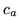

As in equation 14.3, the maximum likelihood estimate of
the probability of an event
occurring is defined by the
number of times that event is observed,  , and the total number of
samples in the training set of all observations,
, and the total number of
samples in the training set of all observations,  , where
. With this definition, events that do
not occur in the training data are assigned zero probability since it
will be the case that . [Katz 1987]14.12 suggests multiplying each observed count by a discount
coefficient factor,
, where
. With this definition, events that do
not occur in the training data are assigned zero probability since it
will be the case that . [Katz 1987]14.12 suggests multiplying each observed count by a discount
coefficient factor,  , which is dependent upon the number of times
the event is observed,
, which is dependent upon the number of times
the event is observed,  , such that
.
Using this discounted occurrence count, the probability of an event
that occurs
, such that
.
Using this discounted occurrence count, the probability of an event
that occurs  times now becomes
.
Different discounting schemes have been proposed that define the
discount coefficient,
times now becomes
.
Different discounting schemes have been proposed that define the
discount coefficient,  , in specific ways. The same discount
coefficient is used for all events that occur the same number of
times on the basis of the symmetry requirement that two events that
occur with equal frequency,
, in specific ways. The same discount
coefficient is used for all events that occur the same number of
times on the basis of the symmetry requirement that two events that
occur with equal frequency,  , must have the same probability, .
, must have the same probability, .
Defining  as the number of events that occur exactly  times
such that
it follows that the total amount of
reserved mass, left over for distribution amongst the unseen events,
is
.
times
such that
it follows that the total amount of
reserved mass, left over for distribution amongst the unseen events,
is
.